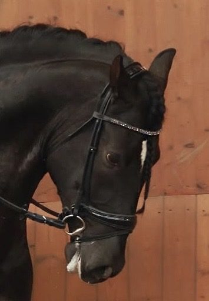

The Inherent Cruelty of Dressage
Dressage presents itself as the highest expression of harmony between horse and rider. It speaks in the language of elegance and refinement, promising softness, partnership, and a shared understanding. To the outside world, it looks like a dance—fluid, balanced, serene.
But beneath that polished surface lies a truth that is far less graceful. The system has been quietly removed from the FEI Dressage Rules (Article 401) because they know that what this says versus what everyone says from "topsport" down to grassroots level is not that. It is worried babies and defeated "schoolmasters" – if they live that long.
This sounds lovely but the cruelty is inherent because it relies on the systematic control of a horse's body and mind while insisting that this control is voluntary. The abuser saying the victim enjoyed it. It is a system that depends on the horse's compliance, then interprets that compliance as consent. The cruelty is not always loud or dramatic. It is often quiet, subtle, and socially sanctioned—more akin to coercive control than overt violence.

The Aesthetic That Hides the Harm
Dressage calls itself an art. Riders are taught that the work is about subtle communication, aids that become more discreet – refined. A delicate balance, and a shared language between species. The ideal horse appears effortless—light, supple, attentive, almost floating.
And it is beautiful. That beauty is part of the problem.
A horse does not need to rear or resist for something to be wrong. Trauma does not always look like panic. It often looks like stillness, tightness, or a carefully managed quiet. A horse can be suffering long before he ever shows it.
A System Built on Control by Pain
Behind the aesthetic lies a system that requires absolute control. And that control is managed through a bit, especially the curb and the noseband and the restricting and restraining aids, and the spur and the whip. The horse must surrender his speed, his direction, his posture, his stride, his frame, his timing—every variable that would normally belong to him—to achieve a goal that he neither understands nor can ever achieve.
He is not free to solve the task in his own way. His body must be reorganised according to human ideals, sculpted and reshaped until it fits a predetermined picture. This reshaping is achieved through pressure: the leg that never fully leaves, the rein that never fully releases, the seat that channels, blocks, or drives. Repetition becomes correction; correction becomes expectation.
Gaslighting the Horse
In coercive systems, the victim's perception is systematically invalidated. Dressage does this with remarkable consistency. When a horse shows discomfort—through tension, hesitation, a change in breathing, a shift in posture—these signals are often dismissed as disobedience, resistance, or "not being through." The horse's attempts to communicate are reframed as flaws to be corrected.
He learns that his own sensations are irrelevant. He learns that expressing discomfort leads not to relief, but to more pressure.
The Nervous System Under Continuous Pressure
A horse under dressage pressure often enters a state of hypervigilance—highly alert, highly responsive, scanning for the next cue, the next correction, the next demand. His body becomes electric, not from joy or expression, but from containment. He is held just below the threshold of explosion or shutdown.
This is not harmony. It is a nervous system stretched thin.
Over time, when resistance proves futile, the horse may shift into appeasement—a softening, a quieting, a compliance that looks like willingness but is actually a survival strategy. If the pressure continues without clear resolution, he may slide further into learned helplessness, where the distinction between effort and futility blurs.
The Missing Moment of Freedom
In any learning system, pressure only has meaning if it leads to clarity. There must be a moment where the horse can say: That was correct. I'm done. I'm free.
In dressage, that moment rarely arrives. The horse is kept "on the aids," "in the contact," "available for the next request." He is not working toward freedom; he is working inside a system that never ends. The pressure does not resolve. It simply shifts shape.
The Problem of No Exit
Horses are extraordinarily stoic. They tolerate discomfort. They adapt. They keep going. But they do so under one essential condition: there must be a way out.
A horse will endure pressure when it leads somewhere clear. Jump the fence, and the pressure ends. Step into the trailer, and the pressure stops. Cross the ditch, and the question is resolved. There is an answer. There is completion.
Dressage removes that clarity. What is the end point of a half pass? Where is the moment of completion in piaffe? What tells the horse, You got it exactly right. You're finished.
Rewards That Barely Register
In most learning systems, success is unmistakable. There is a release, a pause, a shift in state. In dressage, rewards are muted to the point of invisibility: a slight softening of the hand, a finger on the neck lest you "break the contact." Praise is forbidden. Rarely is there a full release, a real pause, a genuine break.
The horse is not clearly told he has succeeded. He is simply asked for the next thing.
When Fatigue Looks Like Obedience
Eventually, something shifts. Not because the horse understands, but because resistance becomes harder to maintain. Fatigue dulls variation, expression, and questioning. What remains can look like steadiness, obedience, consistency.
But this is not deeper understanding. It is reduced capacity to do anything else.
The Mouth That Cannot Speak
Horses' mouths are not just mouths like ours—they are more sensitive. They sort sand from grain and the edible from the inedible. But they also fulfil the function of our hands. They caress, they tend, and they defend. The tissues of the mouth are among the most richly innervated of any in the body.
When a horse resists, he often shows it in his mouth: opening, crossing, tension. And how is that managed? Not by removing the cause, but by removing the expression. Nosebands restrict the horse's ability to object. They do not create acceptance. They create silence.

The Real Problem
The problem is not that dressage occasionally goes too far. The problem is that dressage begins with the assumption that the horse must be controlled in this way at all. It assumes that humans define the posture, the movement, the correctness—and the horse must comply.
Conclusion
Dressage is cruel not because every rider is cruel, but because the system itself removes clear exits, mutes reward, normalises constant pressure, suppresses dissent, and rewards obedience over understanding. It asks the horse to surrender freedom of movement, freedom of expression, and meaningful agency—and rewards him for appearing willing.